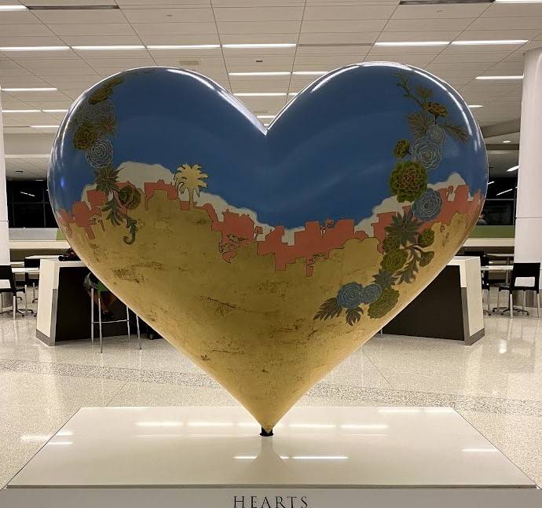
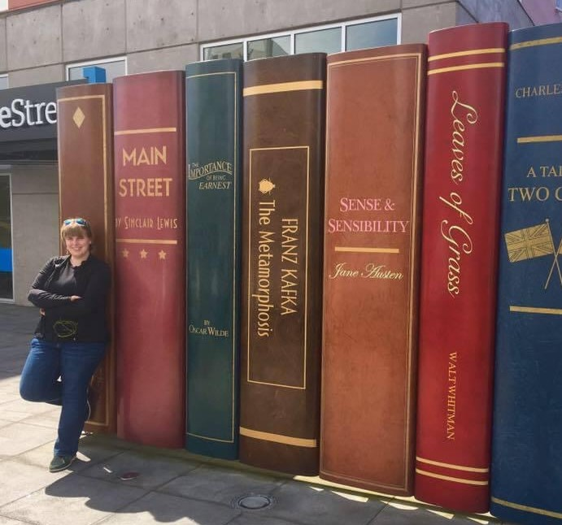

Emerald is an aspiring writer. She lives in Washington state with her wonderful husband, and their Australian Shepherd Doggo.
She has a Bachelor's degree in English from Washington State University. In her free time she enjoys reading, writing, playing with her dog and spending time with family.
She is a huge anime and video game fan, so when she can she enjoys watching her favorite shows, and playing her favs, such as Skyrim or Don’t Starve.
Fun Facts

Emerald has a huge passion for travel. She hopes to make it to all the states, and every continent.
She used to work for an airline, so she was traveling every week for several years.
She hopes to continue to travel as often as she can in the future.

Emerald is originally from Alaska, and she still has a tiny house on her property.
She is able to use this to visit her family and have a place to stay. When she is not visiting, other
family members use this house as a place to stay when they come home. She originally did not want to
have the tiny house put on her property, but her mom suckered her in by building it as a tiny replica
of her Nona’s house. Even using the same front door and windows.

Emerald is somewhat of a book dragon, having a TBR a mile long.
Her favorite books are: City of Bones by Cassanadra Clare. Uglies by Scott Westerfeild,
and Pride and Prejudice by Jane Austen. She has been an avid reader since she was a young
child, with her mother reading her books such as all the Dr. Seuss books, and The Borrowers.
She passed that love of reading on to her niece, reading books to her when she was little,
and buddy reading when she grew older.